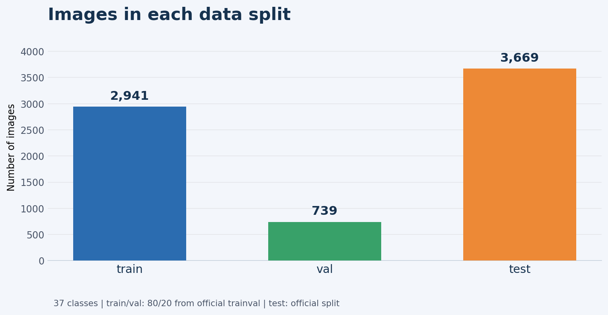

Tóm tắt kết quả
Nhóm tận dụng trọng số pretrained ImageNet, điều chỉnh đầu phân loại thành 37 lớp và chọn checkpoint bằng validation trước khi đánh giá trên test.
1. Mục tiêu và bài toán
Bài toán là phân loại ảnh vào một trong 37 giống chó/mèo. Thay vì huấn luyện mạng sâu từ đầu, Transfer Learning sử dụng các đặc trưng đã học từ ImageNet, thay lớp phân loại cuối theo số lớp mới và huấn luyện phần phân loại.
- So sánh hai kiến trúc pretrained VGG16 và DenseNet121.
- Đánh giá learning rate 0.01 và 0.001 trong các cấu hình đã chạy.
- Chọn cấu hình theo validation, sau đó đánh giá test.
Phạm vi: kết quả CSV hiện tại gồm bốn cấu hình, batch size đều là 16. Vì vậy nhóm chưa so sánh batch size 16 với 32.
2. Bộ dữ liệu và kiểm tra dữ liệu
Oxford-IIIT Pet được tổ chức theo định dạng ImageFolder: mỗi thư mục con tương ứng với một lớp. Train và validation được tách phân tầng 80/20 từ split trainval; test giữ nguyên split chính thức.
| Tập dữ liệu | Số ảnh | Mục đích |
|---|---|---|
| Train | 2,941 | Cập nhật tham số mô hình. |
| Validation | 739 | Theo dõi quá trình học và chọn checkpoint/cấu hình. |
| Test | 3,669 | Đánh giá cuối cho cấu hình đã chọn bằng validation. |


Nhóm kiểm tra 37 thư mục lớp trong mỗi split và xác nhận danh sách lớp đồng nhất. Kiểm tra SHA-256 không phát hiện ảnh trùng byte-identical giữa các split; phương pháp này không phát hiện ảnh đã đổi định dạng/nén lại hoặc ảnh gần giống.
3. Tiền xử lý và nạp ảnh
Pipeline trong src/data_loader.py chuyển ảnh về kích thước 224×224 và chuẩn hóa theo thống kê ImageNet. Augmentation ngẫu nhiên chỉ áp dụng ở train để tăng đa dạng ảnh; validation và test dùng phép biến đổi cố định để kết quả ổn định.
| Split | Phép biến đổi | Lý do |
|---|---|---|
| Train | Resize 256 → RandomResizedCrop 224 → RandomHorizontalFlip → ToTensor → Normalize | Tăng đa dạng mẫu, giúp giảm phụ thuộc vào bố cục cố định. |
| Train-eval / Validation / Test | Resize 256 → CenterCrop 224 → ToTensor → Normalize | Đánh giá nhất quán, không tạo biến đổi ngẫu nhiên. |
Chuẩn hóa từng kênh màu theo công thức (x - mean) / std, với mean = (0.485, 0.456, 0.406) và std = (0.229, 0.224, 0.225). Batch chuẩn có dạng [16, 3, 224, 224]; chiều cuối của nhãn tương ứng với một trong 37 lớp.
4. Xây dựng mô hình học chuyển giao
Trong bài thực hành này, nhóm tiến hành so sánh hai mô hình học chuyển giao là VGG16 và DenseNet121 trên bộ dữ liệu Oxford-IIIT Pet. Cả hai mô hình đều được khởi tạo từ các trọng số pretrained trên ImageNet, giúp tận dụng các đặc trưng đã học từ một tập dữ liệu lớn trước đó. Sau đó, lớp phân loại cuối được thay thế bằng đầu ra mới tương ứng với 37 nhãn của bộ dữ liệu Oxford-IIIT Pet.
| Mô hình | Đặc điểm | Tham số trainable / tổng |
|---|---|---|
| VGG16 | Các tầng tích chập tuần tự; kiến trúc kinh điển, dễ mô tả. | 151,589 / 134,412,133 |
| DenseNet121 | Các dense block truyền/tái sử dụng đặc trưng giữa nhiều tầng. | 37,925 / 6,991,781 |
Việc giữ nguyên backbone và chỉ cập nhật phần đầu phân loại giúp giảm thời gian huấn luyện đồng thời vẫn giữ được hiệu quả của các đặc trưng tổng quát đã học từ ImageNet. Đây là cách làm phổ biến trong transfer learning khi dữ liệu mới có quy mô hạn chế nhưng cần tối ưu hiệu suất phân loại. Cách hoạt động cơ bản là: backbone trích xuất đặc trưng từ ảnh, sau đó lớp classifier cuối sẽ dự đoán một trong 37 nhãn. Đây là lý do vì sao phương pháp này phù hợp cho bài toán phân loại ảnh thú cưng.
self.backbone = models.densenet121(weights="IMAGENET1K_V1")
self.backbone.classifier = nn.Linear(1024, num_classes)
# hoặc với VGG16
self.backbone = models.vgg16(weights="IMAGENET1K_V1")
self.backbone.classifier[6] = nn.Linear(4096, num_classes)5. Quy trình huấn luyện và chọn checkpoint
Chương trình giới hạn tối đa 5 epoch trong các lần chạy báo cáo và dùng early stopping với patience 3: dừng khi validation loss không cải thiện ba epoch liên tiếp. TensorBoard ghi metric train (có augmentation), train-eval (transform cố định), validation và test của cấu hình được chọn; CSV tổng hợp kết quả trong outputs/reduced-experiments/results.csv.
python src/main.py --data-dir dataset --epochs 5 --patience 3 \
--batch-size 16 --tune --output-dir outputs/reduced-experimentsLệnh trên cho phép chạy ma trận tuning theo cấu hình mặc định của chương trình. Kết quả được trình bày bên dưới chỉ gồm các lần chạy thực tế trong CSV; không suy diễn thành các cấu hình chưa chạy.
6. Kết quả thực nghiệm
Thực nghiệm đã chạy hai kiến trúc với learning rate 0.01 và 0.001; batch size cố định 16. Chỉ các cấu hình tốt nhất theo validation mới được giữ lại để đánh giá trên test.
| Mô hình | LR | Batch | Epoch tốt nhất / đã chạy | Val loss | Val accuracy | Test accuracy |
|---|---|---|---|---|---|---|
| VGG16 | 0.001 | 16 | 4 / 5 | 0.2831 | 91.34% | 88.80% |
| DenseNet121 | 0.001 | 16 | 4 / 5 | 0.2767 | 91.88% | 91.31% |


7. Đánh giá và thảo luận
- Learning rate: LR 0.001 có validation loss thấp hơn LR 0.01 ở cả hai kiến trúc trong lần chạy này.
- Kiến trúc: DenseNet121 đạt test accuracy 91.31%, cao hơn VGG16 88.80% khoảng 2.51 điểm phần trăm; test loss lần lượt là 0.3236 và 0.3450.
- Khả năng tổng quát hóa: tại checkpoint tốt nhất, khoảng cách train-eval và validation accuracy xấp xỉ 4.07 điểm phần trăm với DenseNet121 và 3.80 điểm phần trăm với VGG16. Đây là dấu hiệu cần theo dõi, không đủ để khẳng định mô hình hoàn toàn không overfit.
- Chọn checkpoint: validation accuracy của hai mô hình đã chọn gần nhau (91.88% và 91.34%); test được dùng sau bước lựa chọn để so sánh cuối.
8. Hạn chế và hướng cải thiện
- Batch size cố định 16; chạy thêm batch size 32 để đánh giá ảnh hưởng của siêu tham số này.
- Kết quả dựa trên một seed và một split; bổ sung nhiều seed hoặc k-fold để ước lượng độ ổn định.
- Giới hạn 5 epoch và môi trường CPU; khảo sát thêm thời gian, tài nguyên và fine-tuning sâu hơn.
- Kiểm tra checksum không nhận diện ảnh gần giống hoặc ảnh đã được nén lại; cân nhắc perceptual hash.
- Bổ sung confusion matrix và precision/recall theo lớp để tìm các giống thường bị nhầm.
9. Kết luận
Nhóm đã xây dựng pipeline phân loại 37 giống chó/mèo bằng transfer learning với VGG16 và DenseNet121. Quy trình gồm kiểm tra split dữ liệu, tiền xử lý ảnh, augmentation chỉ ở train, huấn luyện với CrossEntropyLoss và Adam, chọn checkpoint theo validation loss, sau đó đánh giá test.
Trong các cấu hình thực nghiệm đã có, DenseNet121 với LR 0.001 và batch size 16 đạt test accuracy 91.31%, cao hơn VGG16. Kết luận được giới hạn trong lần thực nghiệm này; cần thêm batch size, seed và lần chạy để đánh giá độ ổn định.
Mã nguồn và tài liệu tham khảo trong dự án
- README — hướng dẫn tổng quan và cách chạy
- data_loader.py — tiền xử lý ảnh và tạo DataLoader cho dữ liệu huấn luyện, validation và test
- models.py — điều phối lựa chọn mô hình và đếm tham số
- vgg16_model.py — triển khai riêng mô hình VGG16
- densenet121_model.py — triển khai riêng mô hình DenseNet121
- engine.py — quy trình huấn luyện, đánh giá và lưu kết quả
- main.py — điều phối toàn bộ thí nghiệm và xuất ra các file kết quả
- Báo cáo kiểm tra dữ liệu và mô hình
Toàn bộ quy trình của dự án được tổ chức theo từng module rõ ràng và dễ theo dõi. Báo cáo thuộc bài thực hành của Nhóm 10, và các số liệu kết quả được lấy từ outputs/reduced-experiments/results.csv.